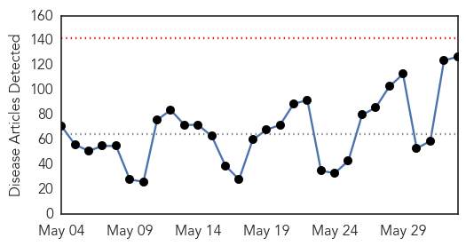
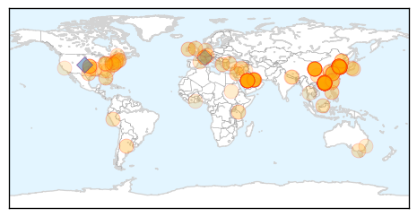
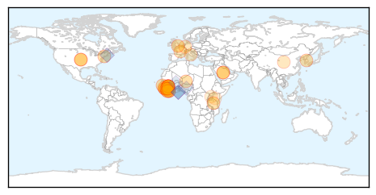

Unknown
30-Day Web Trend
0 alerts, 0 warnings

30-Day Twitter Trend
2 alerts, 0 warnings

Article Locations
Article Confidences

Top Articles:
- 1.000
- S. Korea announces first two MERS deaths
- 1.000
- Malaysia General Business Sports and Lifestyle News
- 1.000
- S.Korea announces first two MERS deaths
- 1.000
- S.Korea announces first two MERS deaths: Ministry
- 1.000
- The World On Arirang
- 1.000
- South Korea announces first two MERS deaths: ministry
- 1.000
- 2 MERS patients die in South Korea
- 0.999
- South Korea announces first two Mers deaths: Yonhap, East Asia News & Top Stories
- 0.999
- South Korea announces first two MERS deaths
- 0.999
- South Korea reports first two deaths from MERS
- 0.999
- Asia MERS Outbreak Alarms Authorities
- 0.999
- Two Die in South Korea After Contracting MERS
- 0.999
- S Korea announces first two MERS deaths
- 0.999
- S.Korea announces first two MERS deaths—Yonhap
- 0.999
- (2nd LD) South Korea reports first two MERS-related deaths
- 0.998
- South Korea reports first MERS deaths to growing alarm
- 0.998
- the edge of knowledge
- 0.998
- S. Korea Reports first MERS Deaths to Growing Alarm — Naharnet
- 0.998
- No Cure, Vaccine Yet For Mers Virus Scare In South Korea, Hong Kong Fears Infection, As Well
- 0.998
- South Korea reports first MERS deaths
- 0.998
- The World On Arirang
- 0.997
- Hundreds of Chinese cancel travel plan to S. Korea on MERS fears
- 0.997
- Two catch MERS via a new route-INSIDE Korea JoongAng Daily
- 0.997
- (3rd LD) S. Korea reports first two deaths from MERS
- 0.996
- Scare causes schools to close
- 0.996
- Fear of a deadly virus has forced a Chinese hospital to assign nurses by lottery
- 0.996
- Hundreds of Chinese cancel travel plan to S. Korea on MERS fears
- 0.995
- S. Korea reports first two deaths from Mers; around 750 quarantined
- 0.995
- [Editorial] MERS claims lives
- 0.995
- Hundreds of Chinese cancel travel plan to S. Korea on MERS fears
- 0.994
- Kenya : China confirms '77 people had contact with MERS patient'
- 0.993
- Two MERS deaths in South Korea
- 0.993
- Thai Health Ministry takes precautions against MERS
- 0.993
- (2nd LD) Schools cancel classes over MERS woes
- 0.992
- 2 killed by MERS, 30 cases confirmed
- 0.992
- Citizens react cautiously after two die from MERS-INSIDE Korea JoongAng Daily
- 0.990
- HK tightens MERS watch after Korean came away undetected
- 0.990
- South Korea reports five more cases of MERS illness
- 0.990
- Schools consider hiatus over MERS woes
- 0.990
- S. Korea Promises More Active Measures to Contain MERS Spread
- 0.988
- Two MERS patients died-INSIDE Korea JoongAng Daily
- 0.987
- KUNA : S. Korea announces first two deaths from MERS
- 0.985
- S Korea reports first two deaths from MERS respiratory illness[1]- Chinadaily.com.cn
- 0.984
- Hundreds isolated in S. Korea
- 0.984
- New MERs Outbreak Causes Fear Amongst Traveller
- 0.982
- South Korea reports two deaths in MERS outbreak
- 0.979
- 680 people in isolation in South Korea - Emirates 24
- 0.979
- KBS World Radio
- 0.975
- Experts claim new MERS cure
- 0.967
- KBS World Radio
Showing top 50 articles...
Top Tweets:
- 0.724
- The outbreak of Middle East Respiratory Syndrome in SouthKorea continues to evolve http://t.co/fZKOqxIFJj MERS
- 0.690
- RT: The outbreak of Middle East Respiratory Syndrome in SouthKorea continues to evolve http://t.co/fZKOqxIFJj MERS
- 0.665
- RT: South Korea MERS outbreak now at 30 cases. 3 cases involve tertiary spread. https://t.co/cWhXkmfR6h
- 0.621
- RT: The rapid rise in MERS cases in SKorea was spooking me. So I asked some experts about the outbreak. spookednomore htt…
- 0.617
- The occurrence of such a large MERS outbreak outside the Middle East is a new dvlpmnt, as is exportation of the disease to a third country
- 0.575
- RT: Vietnam steps up health screening of tourists after 2 MERS deaths in S.Korea. @WHO http://t.…
- 0.560
- that the outbreak in Korea is any different from any hospital-related outbreak anywhere else. 3/4
- 0.529
- The Ministry of Health of SouthKorea has further reported that two recently confirmed cases represent a third generation of transmission
- 0.509
- Possibly all MERS cases contracted in Korea are due to patient 1.The $20k Qs r whether there will be any tertiary cases & if so, how many.
- 0.504
- RT: One good thing in SouthKorea MERS outbreak: we can stop obsessing w/camels & concentrate on hospital transmission htt…
- 0.500
- A5:37% of adults hospitalized with the flu during the 2013-2014 flu season had heart disease. http://t.co/BHtYoyLB9e MensHealthMonth
Ebola
30-Day Web Trend
0 alerts, 3 warnings

30-Day Twitter Trend
0 alerts, 0 warnings

Article Locations
Article Confidences

Top Articles:
- 0.999
- UN official says Ebola will end in Sierra Leone in weeks
- 0.999
- UN official says Ebola will end in Sierra Leone in weeks
- 0.998
- MERS Virus Strikes In South Korea Killed Two
- 0.996
- Sierra Leone: Outbreak Bulletin - Vol. 5 Issue 2, 31 May 2015
- 0.995
- Why isn’t Guinea-Bissau prepared for Ebola?
- 0.993
- Ban to convene international Ebola recovery conference in New York
- 0.993
- Mers outbreak: Chinese hospital staff 'hold ballot to decide who will treat patient with deadly disease'
- 0.990
- Nigerian vaccinologist makes presentation on experimental Ebola vaccine at scientific conference
- 0.990
- Mining Ebola tweets yields valuable outbreak information
- 0.988
- Liberia tackles measles as the Ebola epidemic comes to an end
- 0.988
- Ebola will return, scientist warns
- 0.987
- Lawmaker held over unsafe burial in Ebola-hit Sierra Leone
- 0.982
- Sierra Leone: Sierra Leone Ebola Situation Report, 27 May 2015
- 0.981
- Chief of UN Mission for Ebola Emergency Response calls for calm and for protection of national and international actors involved in fight against Ebola in Guinea - Guinea
- 0.981
- Chief of UN Mission for Ebola Emergency Response calls for calm and for protection of national and international actors involved in fight against Ebola in Guinea - Guinea
- 0.972
- What does it really mean to build health systems?
- 0.963
- Courageous work of CAFOD partners in Sierra Leone and Syria honoured with humanitarian awards
- 0.950
- Health workers get skills in reproductive health
- 0.948
- United Nations Secretary-General Ban Ki-moon's Statements
- 0.939
- Liberians Cautioned against Stigmatizing Ebola Survivors
- 0.919
- USA SUPPORT FOR THE SIERRA LEONE GOVERNMENT IS NOT TEMPORARY
- 0.908
- Two People Die in South Korea After Contracting MERS
- 0.841
- Sierra Leone Cuts Revenue Forecast as Ebola Limits Rebound
- 0.832
- Malnutrition in Guinea
- 0.828
- Ebola at Lungi Airports Environs Concern the NERC
- 0.827
- Researchers discover two new groups of viruses
- 0.762
- Researchers discover two new groups of viruses
- 0.740
- Sierra Leone lawmaker arrested for breaking Ebola emergency laws -
- 0.724
- West and Central Africa Region Weekly Humanitarian Snapshot (26 May – 1 June 2015) - Central African Republic
- 0.665
- Nonprofit Adds Traditional Healers to Health Team
- 0.651
- President Sirleaf Congratulates Italy
- 0.609
- Ebola threat isn't deterring retired teacher's school plan
- 0.525
- Reversing Africa's Medical Brain Drain
- 0.510
- S/Leone: Kenya Airways resumes Freetown flights
Top Tweets:
- 0.995
- Liberia tackles measles as the Ebola epidemic comes to an end - World Health Organization http://t.co/ooMWhb1xPl ebola EVD
- 0.990
- Twitter shared news of Ebola outbreak before health officials - Economic Times http://t.co/6LbhcQlkFF ebola EVD
- 0.970
- ECOWAS Diplomat Commends Liberians For Defeating Ebola > Weeks - Front Page Africa http://t.co/P4OV2Jc99x ebola EVD
- 0.958
- Is Lassa Fever The New Ebola? - Youth Health Magzine http://t.co/bEPe4uz7mn ebola EVD
- 0.947
- Ebola lessons guide International Health Regulations review - CMAJ http://t.co/VGbn94oEmd ebola EVD
- 0.938
- Sierra Leone News : Ebola at Lungi Airport's Environs Concern the NERC - Awareness Times http://t.co/rCQwBriCKh ebola EVD
- 0.923
- ExxonMobil & NOCAL Gives $162K to Post-Ebola Efforts > Monro - Front Page Africa http://t.co/Dqke9PFK7n ebola EVD
- 0.911
- UN Official Says Ebola Will End in Sierra Leone in Weeks - ABC News http://t.co/NSH66OcOo0 ebola EVD
- 0.900
- Ebola threat isn't deterring retired teacher's school plan - Washington Times http://t.co/q5XkSPBY8v ebola EVD
- 0.895
- Lawmakers: End Ebola quarantine at Fort Monmouth - Asbury Park Press http://t.co/wu8tlswWqh ebola EVD
- 0.889
- Ebola Update: 27,055 confirmed, probable & suspected cases reported in 3 most affected countries, with 11,142 deaths. EbolaResponse
- 0.881
- .@JeremyFarrar MERS vaccines/drugs further behind than Ebola's. If the virus starts to spread, won't be any tools. Deja vu all over again.
- 0.867
- How Nigeria beat the ebola virus in three months http://t.co/ngzIXo5fuK
- 0.824
- Ebola threat to Guinea Bissau rises as border zone heats up - Reuters http://t.co/DuWPomfht1 ebola EVD
- 0.822
- Ban to convene international Ebola recovery conference in New York - UN News Centre http://t.co/n8ctoI4aiC ebola EVD
- 0.814
- Ebola threat to Guinea Bissau rises as border zone heats up - Yahoo News http://t.co/s8A7w9LUFc ebola EVD
- 0.792
- Nigerian scientist presents Ebola vaccine report in France - Premium Times http://t.co/ymuiHcEWQw ebola EVD
- 0.775
- 2 June - news pouch on avianflu avianinfluenza Ebola EbolaResponse MERS NepalQuake http://t.co/65eGdtJivR]
- 0.763
- Nigerian vaccinologist makes presentation on experimental Ebola vaccine at ... - The Guardian Nige... http://t.co/3dXuocFtPf ebola EVD
- 0.762
- Inverness-based nurse speaks about Ebola research experiences - Aberdeen Press and Journal http://t.co/s4NYO87LSe ebola EVD
- 0.670
- Mining Ebola tweets yields valuable outbreak information - Medical News Today http://t.co/jwGxfBIyTD
- 0.664
- UNMEER Head Peter Graaff to UNGA: "We have observed considerable progress in containing this Ebola outbreak." EbolaResponse
- 0.645
- Is Lassa Fever The New Ebola? - Youth Health Magzine http://t.co/e3Qk0Lpdi9
- 0.628
- ECOWAS Diplomat Commends Liberians For Defeating Ebola > Weeks - Front Page Africa http://t.co/bVOdCAk1Fk
- 0.534
- UN Official Says Ebola Will End in Sierra Leone in Weeks - ABC News http://t.co/f9SAOF5Jnv
- 0.503
- RT: @EbolaGC West African celebrities launch a SongContest in Guinea that aims to put an end to Ebola …